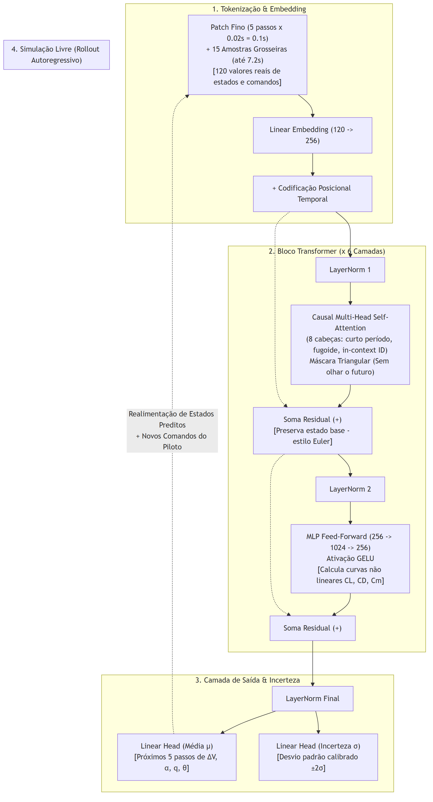
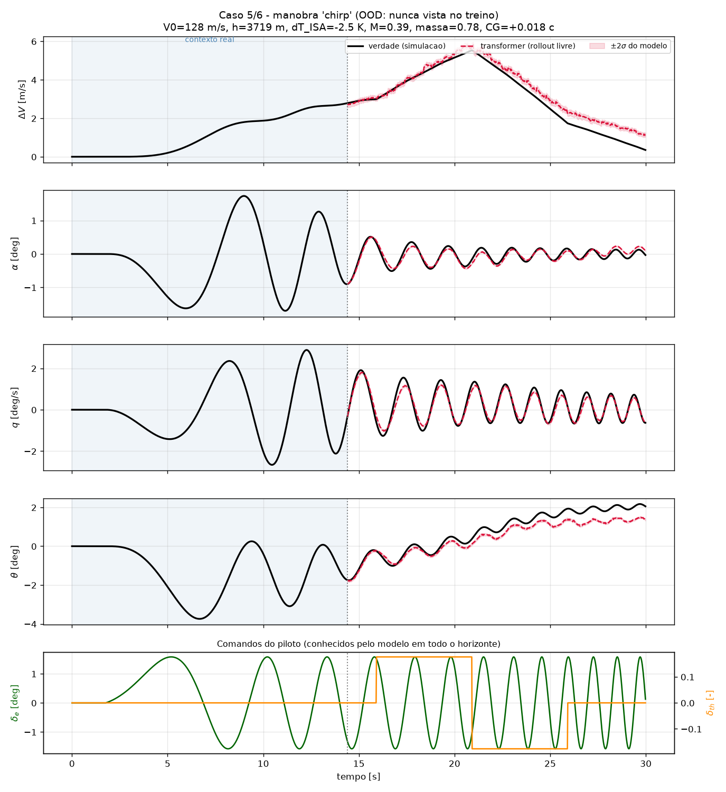
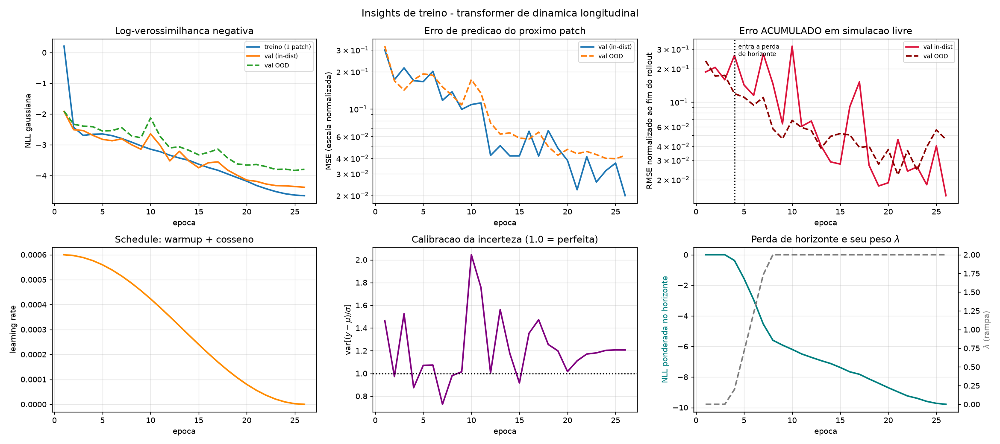
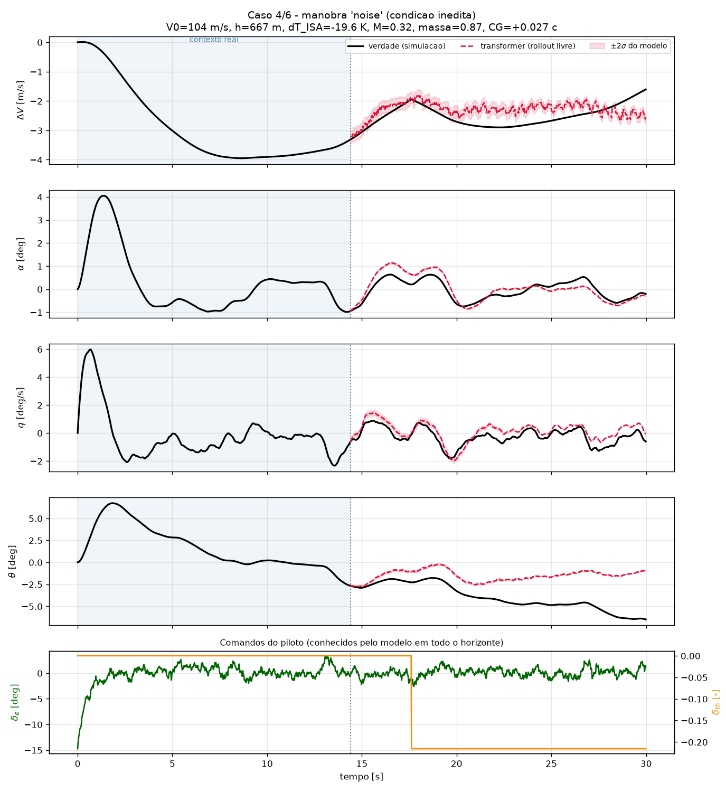
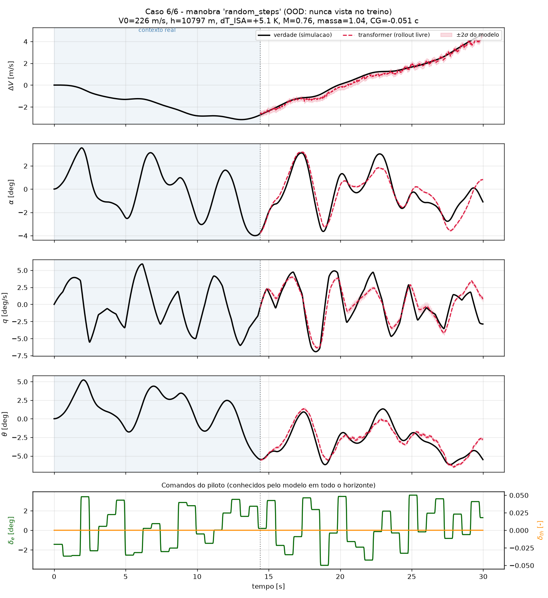
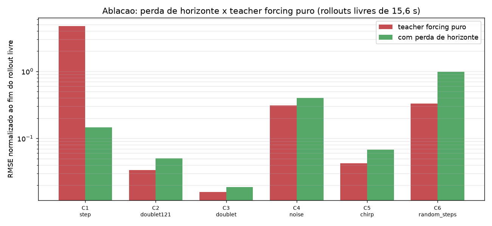

Sumário
- 1. Introdução
- 2. Computação Universal, Estado e Modelos de Mundo
- 3. Prova de Conceito: Emulação Neural da Dinâmica Longitudinal
- 4. Fidelidade Dinâmica e Simulação Livre
- 5. Da Dinâmica da Aeronave à Dinâmica do Piloto
- 6. Exploração Estocástica de PIO
- 7. Limitações, Validação e Perspectivas
- 8. Conclusão
- Anexo A — Anatomia de um Transformer Dinâmico
- Anexo B — Ensaios Complementares e Comparação com Outras Arquiteturas
1. Introdução
A simulação de veículos aeroespaciais por integração numérica das equações de movimento é uma prática consolidada na engenharia aeronáutica. Ainda que os modelos da planta isolada sejam maduros, fenômenos críticos de instabilidade frequentemente emergem no acoplamento em malha fechada entre aeronave e piloto humano. Oscilações induzidas pelo piloto (PIO) aparecem precisamente nesse território intermediário: não são propriedade exclusiva da aeronave, do sistema de controle ou do operador, mas do sistema dinâmico formado pela interação entre eles. Saturações de atuadores, atrasos neuromusculares, mudanças de estratégia e condições transitórias podem criar configurações nas quais modelos lineares estacionários deixam de representar os mecanismos relevantes. O incidente com o protótipo YF-22 durante uma aproximação em 1992 tornou-se um exemplo conhecido desse tipo de interação [33].
A motivação deste estudo nasce de uma ideia simples, mas com consequências mais profundas do que parece à primeira vista. Um simulador convencional recebe explicitamente as equações da física e as integra no tempo. Um modelo generativo sequencial pode, em princípio, aprender a transformação que leva um estado ao seguinte diretamente a partir de trajetórias. Em vez de escrever o operador de evolução, apresentamos à máquina seus efeitos e pedimos que ela reconstrua esse operador. Para a dinâmica de voo, isso significa estimar o próximo vetor de estado a partir do estado atual, dos comandos e do histórico recente. Para um piloto, significa estimar uma distribuição de possíveis ações a partir daquilo que ele percebeu e fez até aquele instante.
A tese conceitual do trabalho apoia-se em dois argumentos relacionados. O primeiro vem da teoria da computação. Em 2017, Vaswani e colaboradores introduziram a arquitetura Transformer, originalmente como um modelo de sequência baseado inteiramente em mecanismos de atenção [13]. Poucos anos depois, resultados teóricos começaram a estabelecer formalmente algo que, à época da arquitetura original, não era evidente: Transformers adequadamente construídos podem atingir poder computacional universal. Pérez, Barceló e Marinkovic demonstraram a completude de Turing de uma classe de Transformers com atenção dura, em trabalho posteriormente publicado no Journal of Machine Learning Research em 2021 [4]. Resultados posteriores mostraram construções universais com modelos aumentados por memória e Transformers executados em laço, reforçando que a arquitetura não está restrita a simples associação estatística entre elementos de uma sequência [5][6].
A importância histórica dessas demonstrações para este estudo não está em transformar dinâmica de voo em teoria abstrata da computabilidade. O ponto é conceitual. A integração de Newton-Euler que executamos há décadas em computadores digitais é um algoritmo. Se um Transformer autorregressivo pertence, sob construções apropriadas, a uma classe de máquinas Turing-completas, não existe uma limitação computacional fundamental que o impeça de representar o algoritmo de evolução temporal de uma aeronave ou de outro processo físico computável. A completude de Turing não garante que uma rede pequena, treinada com um conjunto finito de dados, aprenderá esse algoritmo com precisão. Ela estabelece algo anterior: a arquitetura possui capacidade representacional suficiente para que a hipótese faça sentido.
O segundo argumento vem da teoria de sistemas. Tanto a mecânica de voo quanto um modelo adequado do operador podem ser formulados em termos de estado. Quando o estado contém toda a informação necessária para descrever a evolução futura, o processo é markoviano: o futuro depende do presente, e o passado importa apenas na medida em que está codificado nesse estado. Uma aeronave escrita em espaço de estados é o exemplo clássico. Um piloto é mais complexo porque boa parte de seu estado relevante é interna e não observada diretamente, mas memória, estratégia, atenção, fadiga e dinâmica neuromuscular podem ser entendidas como variáveis de um estado ampliado. O histórico observado passa então a fornecer evidência sobre esse estado latente. A arquitetura Transformer é particularmente interessante porque combina precisamente essas duas ideias: é uma máquina computacional geral que opera sobre sequências e aprende transições condicionadas ao contexto.
A hipótese conceitual
A completude de Turing não prova que uma rede aprenderá corretamente uma aeronave, e a markovianidade não afirma que um piloto humano seja simples. O argumento é mais modesto e mais profundo: se aeronave e piloto podem ser descritos como processos físicos de estado e suas evoluções são computáveis, então não existe uma separação formal que obrigue a representá-los por classes completamente distintas de modelos. Um mesmo operador generativo sequencial pode, em princípio, servir como linguagem para ambos.
Essa possibilidade interessa especialmente à análise de PIO porque um modelo generativo não precisa produzir uma única resposta média. Ele pode representar uma distribuição de respostas. Para a planta, essa propriedade fornece uma forma de expressar incerteza de predição. Para o piloto, ela oferece algo mais importante: a possibilidade de representar uma população de comportamentos. Dois pilotos submetidos à mesma perturbação não aplicam necessariamente o mesmo comando, e um mesmo piloto pode alterar sua estratégia ao longo de uma manobra. Uma regressão determinística tende a condensar essa diversidade em uma resposta média. Um modelo generativo pode preservar a variedade, inclusive nas regiões da distribuição onde se encontram comportamentos raros e potencialmente perigosos.
O objetivo experimental deste white paper é deliberadamente mais restrito do que essa visão completa. Implementa-se um Transformer causal para emular a dinâmica longitudinal linearizada de uma aeronave de transporte genérica. A rede recebe apenas estados e comandos. Ela não recebe as matrizes \(A\) e \(B\), derivadas de estabilidade, massa, altitude ou posição do centro de gravidade. Seu desempenho é então comparado à integração convencional da planta, com atenção particular à estabilidade em simulação livre, à reprodução de ganho e fase e à generalização para excitações não vistas durante o treinamento.
A extensão para um piloto generativo, Monte Carlo e busca adversarial é apresentada como consequência metodológica, não como resultado já demonstrado. Essa distinção acompanha todo o texto. A planta neural constitui a prova de conceito experimental. O piloto estocástico representa a etapa seguinte: um modelo que, em vez de responder como um operador médio, gere uma distribuição de estratégias e permita explorar sistematicamente as combinações de comportamento humano, perturbação e dinâmica da aeronave capazes de produzir PIO.
2. Computação Universal, Estado e Modelos de Mundo
A história da computação oferece uma perspectiva útil sobre o problema. Quando Turing introduziu a máquina universal, a novidade não era a capacidade de executar uma tarefa específica, mas a constatação de que uma única máquina, alimentada por uma descrição apropriada, poderia executar qualquer procedimento efetivamente computável [2]. A distinção entre uma calculadora construída para resolver um problema e um computador geral está precisamente aí. O hardware deixa de determinar a tarefa, e o algoritmo passa a fazê-lo.
David Deutsch levou essa ideia ao terreno da física ao formular o princípio de Church-Turing-Deutsch: todo processo físico finitamente realizável deveria ser simulável, com precisão arbitrária, por um dispositivo computacional universal adequado [1]. A afirmação é mais forte do que a tese clássica de Church-Turing porque não trata apenas de funções matemáticas abstratas. Ela propõe uma relação entre computação e a própria classe de evoluções permitidas pelas leis físicas.
Para a mecânica de voo, não há nada de exótico nessa conclusão. Um simulador de seis graus de liberdade já demonstra diariamente que a evolução de uma aeronave pode ser representada por operações computacionais finitas. Partimos de um vetor de estado, avaliamos forças e momentos, calculamos derivadas e avançamos o sistema no tempo. O procedimento inteiro pode ser executado em uma máquina digital. A questão, portanto, não é se a dinâmica da aeronave pode ser computada. Ela já é.
O passo conceitual relevante surge quando trocamos o programa escrito à mão por um programa aprendido. A arquitetura Transformer foi apresentada em 2017 como uma alternativa às redes recorrentes para processamento de sequências [13]. A pergunta sobre sua capacidade computacional geral veio depois. Redes neurais recorrentes já haviam sido relacionadas à computação universal por Siegelmann e Sontag em 1995 [3]. No caso dos Transformers, a demonstração formal de Pérez, Barceló e Marinkovic estabeleceu que uma classe de Transformers com atenção dura pode simular uma máquina de Turing [4]. Em 2023, Schuurmans mostrou completude em modelos de linguagem aumentados por memória externa, enquanto Giannou e colaboradores construíram Transformers em laço capazes de executar programas gerais [5][6]. Historicamente, portanto, a Turing-completude não foi uma premissa da invenção do Transformer, mas uma propriedade teórica identificada depois, à medida que se compreendeu melhor a capacidade algorítmica da arquitetura.
Isso altera a intuição sobre o papel da rede. Se a integração temporal de uma dinâmica longitudinal é um algoritmo, então uma arquitetura computacional universal pode, em princípio, executar um procedimento equivalente. O número de camadas da rede não precisa corresponder ao número de passos temporais, assim como o número de estágios internos de um integrador Runge-Kutta não corresponde à duração total da simulação. A rede inteira funciona como um operador de avanço. A realimentação autorregressiva aplica esse operador repetidamente, e é essa repetição que cria o tempo simulado.
Intuição de engenharia
Um Runge-Kutta de quarta ordem possui quatro avaliações internas por passo, mas pode simular trinta minutos de voo porque o mesmo algoritmo é reaplicado milhares de vezes. Um Transformer de seis blocos não está limitado a seis instantes pelo mesmo motivo. A profundidade pertence ao operador de transição. O tempo aparece quando esse operador é chamado novamente sobre sua própria saída.
Essa analogia não implica que um Transformer seja numericamente equivalente a um integrador clássico. O integrador recebe explicitamente \(\dot{\mathbf{x}}=f(\mathbf{x},\mathbf{u})\), enquanto a rede procura aprender a transformação a partir das trajetórias. A diferença é essencial para validação, interpretabilidade e extrapolação. Ainda assim, ambos pertencem à mesma categoria conceitual mais ampla: máquinas que produzem a evolução de um estado no tempo.
Estado e Markovianidade
A segunda peça do argumento não vem da computação, mas da própria mecânica de voo. A formulação clássica em espaço de estados explora a possibilidade de concentrar no vetor presente toda a informação necessária para prever a evolução futura. Para uma dinâmica longitudinal linearizada,
\[ \dot{\mathbf{x}}(t)=A\mathbf{x}(t)+B\mathbf{u}(t), \]
com
\[ \mathbf{x} = \begin{bmatrix} \Delta V & \alpha & q & \theta \end{bmatrix}^{T}, \qquad \mathbf{u} = \begin{bmatrix} \delta_e & \delta_{th} \end{bmatrix}^{T}, \]
o estado presente e a entrada atual determinam a derivada instantânea. Não é necessário conhecer toda a trajetória desde a decolagem para calcular o próximo passo. Toda a memória fisicamente relevante, dentro do modelo escolhido, foi condensada no estado.
Essa é a propriedade de Markov. O nome costuma evocar cadeias probabilísticas discretas, mas a ideia é mais geral: o estado é uma representação suficiente do passado para determinar a distribuição do futuro. Sistemas diferenciais de primeira ordem possuem naturalmente essa estrutura quando o vetor de estado foi definido de forma adequada.
O Transformer autorregressivo opera segundo uma lógica compatível. Em cada instante, produz uma distribuição para a próxima saída condicionada ao contexto disponível. Se todas as variáveis relevantes fossem observadas explicitamente, uma única amostra de estado poderia ser suficiente. Na bancada deste trabalho, porém, massa, altitude, densidade, centro de gravidade e derivadas de estabilidade não são apresentados à rede. O sistema físico completo continua markoviano, mas o vetor observado pela rede é incompleto.
Nesse caso, o histórico adquire outra função. Ele não é necessário porque a física tenha perdido sua causalidade, mas porque parâmetros e estados relevantes estão ocultos. A sequência recente contém pistas sobre eles. A razão entre comando e aceleração, o amortecimento observado após um doublet, a frequência de uma oscilação ou a taxa de troca entre velocidade e atitude carregam informação sobre a planta que não aparece explicitamente nos canais fornecidos.
Há aqui uma conexão natural com identificação de sistemas. Quando um engenheiro observa uma resposta transitória, pode inferir características que não foram medidas diretamente. Um curto período mais lento, uma resposta de arfagem mais sensível ou uma fugoide menos amortecida revelam algo sobre a condição operacional. O Transformer pode usar o histórico de maneira semelhante, mas substitui a identificação explícita de parâmetros por uma representação latente aprendida.
O piloto como processo de estado
O mesmo raciocínio pode ser levado ao piloto, desde que se preserve a diferença entre um modelo conceitual e uma descrição completa da cognição humana. Um piloto não é markoviano se seu “estado” for definido apenas pelos instrumentos que vê naquele instante. Sua próxima ação depende também de expectativa, estratégia, memória recente, carga de trabalho, adaptação, fadiga, propriocepção e dinâmica neuromuscular. Essas variáveis não desaparecem apenas porque não foram observadas.
A formulação de estado permite tratá-las de maneira mais cuidadosa. Se existe um conjunto suficientemente rico de variáveis internas capaz de resumir o que importa para a evolução futura do operador, então o sistema ampliado pode novamente ser descrito como markoviano. Parte desse estado é observável, parte é latente. A sequência de ações e respostas fornece informação sobre a porção oculta.
Essa observação dá ao histórico uma função conceitualmente importante. Um piloto que começa a inverter comandos mais cedo, aumentar ganho ou encurtar o período de correção está revelando uma mudança de estado interno mesmo que nenhuma variável chamada “estratégia” tenha sido medida. Um modelo sequencial pode aprender a usar essas regularidades temporais como evidência.
A conexão mais profunda entre aeronave e piloto está, portanto, menos na aparência dos dois sistemas do que na linguagem matemática usada para descrevê-los. Ambos podem ser vistos como processos físicos que carregam um estado, recebem entradas, produzem saídas e evoluem causalmente. A aeronave possui um estado em grande parte acessível à modelagem física. O piloto possui um estado mais rico e parcialmente oculto. Em ambos os casos, o problema consiste em estimar transições.
Modelos de mundo e a arquitetura Transformer
A expressão world model descreve modelos que aprendem a estrutura dinâmica de um ambiente pela observação de sequências [8]. Em vez de responder apenas a uma entrada isolada, eles aprendem regularidades que permitem imaginar estados futuros. Estudos em ambientes discretos mostraram que modelos sequenciais podem desenvolver representações internas do estado de um sistema quando essa representação é útil para previsão [7].
Para uma aeronave, a ambição é análoga. A rede não precisa receber explicitamente a frase “esta condição possui \(M_q=-0{,}8\)” para sentir o efeito de \(M_q\) sobre uma trajetória. Se determinado amortecimento aparece repetidamente na relação entre \(q\), comando e evolução futura, essa estrutura deixa uma assinatura estatística nos dados. O modelo pode aprender a usá-la sem necessariamente convertê-la na mesma variável simbólica usada por um engenheiro.
O Transformer é atraente para esse papel porque combina três características. A primeira é a autoatenção, que permite consultar diferentes partes do histórico sem condensá-las obrigatoriamente em um único vetor recorrente. A segunda é a causalidade autorregressiva, que produz uma evolução passo a passo sem acesso ao futuro. A terceira é a possibilidade de modelar uma distribuição condicional, e não apenas uma média.
A forma geral da transição deixa de ser
\[ \mathbf{x}_{k+1} = F(\mathbf{x}_k,\mathbf{u}_k) \]
e passa a ser
\[ \mathbf{x}_{k+1} \sim p_\theta \left( \mathbf{x}_{k+1} \mid \mathbf{x}_{\leq k}, \mathbf{u}_{\leq k} \right). \]
Para a planta quase determinística usada nesta prova de conceito, a dispersão representa principalmente a incerteza de predição do modelo. Para um futuro modelo de piloto, a mesma estrutura ganha outra interpretação: trajetórias diferentes podem ser amostras legítimas de comportamentos diferentes.
Esse caráter estocástico é especialmente importante para PIO. O fenômeno não precisa aparecer no comportamento médio. Pode surgir quando um subconjunto de pilotos, em determinado estado interno e diante de uma determinada sequência de perturbações, fecha a malha com ganho e atraso desfavoráveis. Uma arquitetura que represente apenas o comando esperado tende a apagar precisamente a diversidade que interessa a uma análise de cauda.
3. Prova de Conceito: Emulação Neural da Dinâmica Longitudinal
A prova de conceito foi construída sobre uma planta que permite separar claramente a questão de aprendizado da questão de física. Utiliza-se a dinâmica longitudinal linearizada de pequenas perturbações de uma aeronave de transporte comercial genérica. A escolha mantém dois modos com escalas temporais distintas, curto período e fugoide, mas conserva uma referência analítica bem compreendida contra a qual o emulador pode ser testado. A pergunta experimental é direta: fornecendo apenas o histórico do movimento e os comandos, a rede consegue reconstruir um operador temporal suficientemente fiel para continuar a trajetória sem receber novamente os estados verdadeiros da aeronave?
A entrada da rede contém seis sinais: os quatro estados longitudinais \([\Delta V,\alpha,q,\theta]\) e os dois comandos \([\delta_e,\delta_{th}]\). A saída contém uma distribuição prevista para os quatro estados no trecho temporal seguinte. Em cada avanço, portanto, os comandos continuam conhecidos, mas a rede precisa estimar velocidade, ângulo de ataque, taxa de arfagem e atitude. Altitude, massa, centro de gravidade, densidade atmosférica, matrizes \(A\) e \(B\) e derivadas de estabilidade não são fornecidos explicitamente. Sua influência precisa ser inferida a partir da resposta dinâmica presente no histórico.
A arquitetura usada é deliberadamente moderada para os padrões atuais de aprendizado profundo: seis blocos Transformer, representação interna de 256 unidades, redes feed-forward de 1.024 unidades e aproximadamente 4,82 milhões de parâmetros treináveis. Não existe um número único e particularmente informativo de “neurônios” em um Transformer, porque a arquitetura é melhor descrita por suas dimensões internas, blocos e parâmetros. A escala acima dá ao leitor a ordem de grandeza correta sem transformar o corpo do texto em documentação da rede.
O protocolo de avaliação também é simples de interpretar. Nos rollouts principais, os primeiros 14,4 s fornecem estados reais para construir o contexto inicial. A partir daí, a realimentação de estado verdadeiro é interrompida. Durante os 15,6 s seguintes, a rede continua recebendo os comandos externos, mas seus próprios estados previstos passam a compor o contexto usado no passo seguinte. Ela precisa, portanto, continuar a trajetória sem qualquer correção de estado proveniente da planta de referência. Esse trecho em simulação livre é o teste central de estabilidade do operador aprendido.
Os detalhes completos da arquitetura, incluindo o significado de token, embedding, codificação temporal, autoatenção, normalização, cabeça probabilística, teacher forcing e perda de horizonte, são reunidos no Anexo A. O corpo principal mantém apenas os elementos necessários para interpretar o experimento e seus resultados.
Planta de referência
A dinâmica é escrita na forma clássica [9][10]:
\[ \dot{\mathbf{x}} = A\mathbf{x}+B\mathbf{u}. \]
O estado longitudinal é
\[ \mathbf{x} = \begin{bmatrix} \Delta V \\ \alpha \\ q \\ \theta \end{bmatrix}, \]
e os comandos são
\[ \mathbf{u} = \begin{bmatrix} \delta_e \\ \delta_{th} \end{bmatrix}. \]
A matriz \(A\) reúne as derivadas que governam a dinâmica natural da aeronave, enquanto \(B\) traduz a autoridade dos comandos. Na formulação clássica, termos como \(X_u\), \(Z_\alpha\), \(M_\alpha\) e \(M_q\) determinam grande parte das frequências e amortecimentos modais. Os autovalores de \(A\),
\[ \det(\lambda I-A)=0, \]
produzem os pares associados à fugoide e ao curto período, cujas escalas temporais diferem substancialmente.
Essa diferença fornece um teste exigente para a representação sequencial. O curto período exige resolução suficiente para preservar taxa angular, ângulo de ataque e defasagem de comando. A fugoide exige memória longa o bastante para representar a troca lenta entre energia cinética e potencial. Um emulador que funcione apenas como interpolador local pode acompanhar os primeiros instantes e ainda perder progressivamente um desses modos.
A referência é integrada por Runge-Kutta de quarta ordem com passo \(\Delta t=0{,}02\text{ s}\), correspondente a 50 Hz [12]. O integrador convencional desempenha aqui o papel de verdade de referência. Toda conclusão sobre o modelo neural é uma comparação contra essa dinâmica conhecida.
Geração das trajetórias
Foram amostradas 1.400 condições de voo dentro de um envelope representativo, variando altitude, velocidade, temperatura, massa e centro de gravidade. Condições incompatíveis com os limites escolhidos de coeficiente de sustentação ou Mach foram descartadas.
| Parâmetro | Faixa Amostrada |
|---|---|
| Altitude | 1 a 12.000 m |
| Desvio de temperatura ISA | −25 K a +25 K |
| Velocidade verdadeira \(V_0\) | 94 a 260 m/s |
| Número de Mach | 0,28 a 0,82 |
| Fração de massa nominal | 0,72 a 1,15 |
| Centro de gravidade | \(\pm 0{,}06\bar c\) |
As trajetórias de treinamento foram excitadas por sinais tradicionais de identificação de sistemas, como impulsos, degraus, doublets, sequências 1-2-1, ruído colorido e multissomas. Esses sinais projetam energia em regiões diferentes do espectro e revelam combinações distintas das derivadas da planta. O banco sintético funciona, nesse sentido, como uma campanha de ensaio em voo automatizada.
A manobra chirp foi deliberadamente excluída do conjunto de treinamento. Nenhuma trajetória usada para ajustar os pesos continha uma varredura contínua de frequência. O chirp de banda larga entre 0,008 e 1,2 Hz foi reservado exclusivamente para validação fora da distribuição. Nesse contexto, fora da distribuição, ou OOD (out-of-distribution), significa que a classe de excitação usada no teste não aparece nas trajetórias usadas para ajustar os pesos. O ponto de voo pode ainda pertencer ao envelope físico estudado, mas a forma temporal do comando é nova para a rede. Essa separação é importante porque transforma o ensaio em um teste de generalização espectral: a rede precisa responder corretamente a uma forma de excitação que nunca viu durante o treinamento.
O conjunto final reúne 49.411 trajetórias, particionadas entre treinamento, validação interpolativa e avaliação de extrapolação. As classes reservadas para validação incluem o chirp de banda larga e sequências adicionais que não participam do ajuste dos pesos.
Representação neural da planta
O emulador recebe uma janela temporal com os quatro estados longitudinais e os dois comandos. Altitude, massa, centro de gravidade, densidade e derivadas não são fornecidos. A rede precisa, portanto, inferir a influência desses parâmetros pela resposta dinâmica acumulada no contexto.

Figura 1. Diagrama de blocos do emulador longitudinal. O histórico de estados e comandos alimenta o Transformer causal, que produz uma distribuição para a evolução futura e pode realimentar sua própria predição em simulação livre.
A saída é probabilística. Para cada avanço, a rede estima uma média e uma dispersão para os estados futuros. A média define a trajetória nominal, enquanto a dispersão representa a incerteza associada à predição. O modelo não é usado no corpo deste estudo como gerador multimodal de plantas físicas. A importância da formulação probabilística está em preparar a mesma linguagem para o problema posterior do piloto, no qual múltiplas respostas podem ser fisicamente plausíveis.
A simulação livre começa com uma janela preenchida por telemetria de referência. Depois desse período, os estados verdadeiros deixam de ser fornecidos. A rede passa a receber suas próprias predições, junto aos comandos aplicados, e precisa sustentar a dinâmica sem correção externa. A maneira exata como a rede recebe a sequência, como a atenção consulta o passado e como o treinamento é alterado para sobreviver a essa realimentação são detalhadas no Anexo A.
Esse é um teste mais difícil que a predição de um único passo. Se \(\varepsilon_k\) denota o erro de estado, a propagação local pode ser aproximada por
\[ \varepsilon_{k+1} \approx J_k\varepsilon_k+\delta_k, \]
onde \(J_k\) representa a sensibilidade da dinâmica e \(\delta_k\) o erro introduzido pelo operador neural. Em modos pouco amortecidos, um pequeno viés pode persistir e acumular-se por muitos segundos. O treinamento precisa, portanto, considerar não apenas a fidelidade do próximo ponto, mas também a estabilidade da trajetória produzida pela própria rede.
4. Fidelidade Dinâmica e Simulação Livre
A avaliação foi organizada em torno de três propriedades que um emulador de dinâmica de voo precisa preservar. A primeira é a precisão local da transição. A segunda é a estabilidade quando o modelo realimenta as próprias previsões. A terceira é a fidelidade espectral, especialmente ganho e fase, porque erros de fase podem alterar diretamente a interpretação de um fenômeno pilot-in-the-loop. A arquitetura completa, os hiperparâmetros e a formulação do treinamento podem ser consultados no Anexo A, enquanto ensaios adicionais aparecem no Anexo B.
Precisão local e estabilidade global
Dois regimes de treinamento foram comparados. No primeiro, identificado nas tabelas como TF, a rede é treinada apenas por teacher forcing: em cada passo do treinamento, recebe como histórico os estados verdadeiros produzidos pela planta de referência. No segundo, identificado como TF+H, o mesmo teacher forcing é combinado a uma perda de horizonte que também obriga a rede a enfrentar sequências nas quais suas próprias previsões são realimentadas. A construção completa desses dois regimes é explicada no Anexo A.9.
O teacher forcing puro produz melhor log-verossimilhança de um passo: NLL de −4,87 contra −4,38 no modelo com perda de horizonte. Entretanto, essa vantagem local não se traduz diretamente em melhor simulação livre. O modelo com horizonte reduz o RMSE normalizado de 0,034 para 0,014 na validação interpolativa e de 0,062 para 0,046 na extrapolação.
A Tabela 2 mostra o efeito em grandezas físicas. Cada célula numérica é o RMSE, ou raiz do erro quadrático médio, entre a trajetória prevista pela rede e a trajetória de referência RK4 durante os 15,6 s de simulação livre. Para uma variável \(y\), o RMSE é
\[ \mathrm{RMSE}(y) = \sqrt{ \frac{1}{N} \sum_{k=1}^{N} \left( \hat y_k-y_k \right)^2 }. \]
O número possui a mesma unidade da variável. Assim, um valor de \(0{,}897\) na coluna \(\Delta V\) significa que, ao longo de todo o rollout, a diferença quadrática média entre a velocidade prevista e a velocidade de referência corresponde a 0,897 m/s. Na coluna \(\alpha\), os valores estão em graus; em \(q\), em graus por segundo; e em \(\theta\), novamente em graus. Os valores em negrito indicam apenas qual dos dois regimes de treinamento apresentou menor RMSE naquele estado e naquele caso; não representam um teste de significância estatística.
| Caso | Manobra | Modelo | \(\Delta V\) [m/s] | \(\alpha\) [°] | \(q\) [°/s] | \(\theta\) [°] |
|---|---|---|---|---|---|---|
| C1 | Degrau | TF | 20,04 | 2,243 | 3,044 | 6,94 |
| C1 | Degrau | TF+H | 0,897 | 0,042 | 0,132 | 0,981 |
| C2 | Doublet 1-2-1 | TF | 0,482 | 0,023 | 0,030 | 0,092 |
| C2 | Doublet 1-2-1 | TF+H | 0,143 | 0,006 | 0,046 | 0,340 |
| C3 | Doublet | TF | 0,135 | 0,007 | 0,018 | 0,131 |
| C3 | Doublet | TF+H | 0,065 | 0,006 | 0,021 | 0,119 |
| C4 | Ruído colorido | TF | 1,002 | 0,110 | 0,340 | 2,31 |
| C4 | Ruído colorido | TF+H | 0,424 | 0,280 | 0,470 | 2,85 |
| C5 | Chirp OOD | TF | 0,214 | 0,037 | 0,068 | 0,154 |
| C5 | Chirp OOD | TF+H | 0,419 | 0,079 | 0,180 | 0,405 |
| C6 | Degraus aleatórios OOD | TF | 2,000 | 0,418 | 0,779 | 2,02 |
| C6 | Degraus aleatórios OOD | TF+H | 0,213 | 0,684 | 1,326 | 0,772 |
Tabela 2. RMSE físico ao longo de 15,6 s de rollout livre. TF significa treinamento apenas por teacher forcing; TF+H combina teacher forcing e perda de horizonte. Cada número mede o erro médio da trajetória na unidade física indicada pela coluna.
Os resultados mostram um compromisso, e não uma superioridade uniforme. Sob excitações persistentes, o modelo treinado localmente permanece competitivo e pode ser melhor em alguns canais. Nos casos em que a dinâmica precisa continuar evoluindo depois que a excitação principal terminou, os erros do modelo local podem integrar-se durante os modos lentos. No degrau C1, por exemplo, o erro de velocidade cresce para 20,04 m/s sob teacher forcing puro e permanece abaixo de 1 m/s com a perda de horizonte.
Essa diferença é familiar na análise numérica. A qualidade de uma aproximação local não determina sozinha o erro global de uma integração. Um operador usado recursivamente precisa ser julgado pela trajetória que produz.
Simulação livre
A Figura 2 mostra o experimento mais direto. Durante os primeiros 14,4 s, o modelo recebe telemetria verdadeira suficiente para construir seu contexto. A partir desse instante, a referência é removida e a rede passa a evoluir sozinha por mais 15,6 s.

Figura 2. Comparação entre a dinâmica prevista pelo Transformer e a referência RK4. Após o preenchimento inicial do contexto, o modelo opera em simulação livre sob uma excitação chirp reservada exclusivamente para validação e ausente do treinamento.
O caso utiliza \(V_0=128\text{ m/s}\), altitude de 3.719 m, Mach 0,39, massa igual a 0,78 da nominal e centro de gravidade em \(+0{,}018\bar c\). Nenhum desses parâmetros é entregue diretamente à rede. O emulador precisa inferir sua influência pelo modo como a aeronave respondeu antes da interrupção da telemetria e por como continua respondendo aos comandos.
A concordância visual mostra que a rede preserva a relação temporal entre \(\Delta V\), \(\alpha\), \(q\) e \(\theta\) por um horizonte suficientemente longo para incluir vários ciclos do curto período e uma parcela relevante da dinâmica lenta. Isso não demonstra validade universal da arquitetura, mas mostra que a rede não está apenas interpolando o próximo ponto. Ela construiu uma representação capaz de sustentar uma trajetória física coerente por muitos passos autorregressivos.
Fidelidade espectral
A avaliação por chirp é particularmente útil porque a dinâmica longitudinal é naturalmente interpretada em termos modais e de resposta em frequência. Esse ensaio é também um teste genuíno fora da distribuição: a rede não foi treinada com chirps. A varredura contínua de frequência foi mantida completamente fora do conjunto usado para ajustar os pesos e introduzida somente na validação. Assim, o modelo não pode reproduzir a manobra por reconhecimento direto de um padrão de excitação visto anteriormente.
O chirp utilizado percorre continuamente de 0,008 a 1,2 Hz, atravessando a região da fugoide, frequências intermediárias e o curto período. Sessenta rollouts independentes foram avaliados. A intenção é semelhante à de um ensaio de identificação em frequência: verificar se o operador aprendido preserva a relação entre entrada e resposta em uma faixa contínua, mesmo tendo sido treinado apenas com outras classes de excitação.
| Métrica em 60 rollouts de chirp OOD | Valor |
|---|---|
| RMSE normalizado médio | 0,168 |
| RMSE normalizado ao final do rollout | 0,108 |
| Ganho em \(\alpha\), \(q\), \(\theta\) | 1,09 / 1,02 / 1,11 |
| Defasagem em \(\alpha\), \(q\), \(\theta\) | 0,02 / 0,02 / 0,01 s |
A proximidade do ganho à unidade mostra que a amplitude dos principais estados é preservada razoavelmente ao longo da varredura. Mais importante para a aplicação proposta, a defasagem permanece da ordem de um passo de integração. Um emulador que introduzisse atraso artificial poderia alterar as margens de fase de uma malha piloto-aeronave e produzir ou suprimir PIO de forma numérica. Preservar fase é, portanto, um requisito físico e não apenas uma métrica adicional.
Incerteza preditiva
A saída probabilística também permite perguntar se a dispersão declarada pelo modelo é compatível com os erros observados. Se o resíduo normalizado
\[ z = \frac{x-\mu_\theta}{\sigma_\theta} \]
for aproximadamente padronizado, sua variância deve estar próxima de 1. No conjunto de validação foi obtido
\[ \mathrm{var}(z)=1{,}21. \]
O valor sugere calibração global razoável, embora não seja suficiente para validar probabilidades de cauda. Essa ressalva torna-se importante quando o objetivo migra de reprodução de trajetória para segurança. Uma distribuição pode representar bem a região central e ainda estimar incorretamente eventos muito raros.
A Figura 3 mostra a evolução conjunta das métricas de treinamento e calibração. Na figura, o MSE de patch é o erro quadrático médio da predição local do próximo patch, enquanto o RMSE de rollout mede o erro acumulado quando a rede é usada recursivamente em simulação livre. O significado de NLL, da cabeça probabilística e da perda de horizonte é desenvolvido no Anexo A.8 e no Anexo A.9.

Figura 3. Evolução da log-verossimilhança negativa, erro local, erro de rollout livre e calibração da incerteza ao longo do treinamento.
5. Da Dinâmica da Aeronave à Dinâmica do Piloto
A prova de conceito anterior trata apenas da planta. Sua importância para PIO aparece quando o mesmo formalismo é aplicado ao outro elemento da malha: o piloto.
A engenharia de qualidades de voo possui longa tradição de modelos matemáticos de operador humano. McRuer e Jex mostraram que, sob tarefas de rastreio bem definidas, a resposta do piloto pode ser aproximada por uma função de transferência quase-linear [21]:
\[ Y_p(s) = K_p \frac{T_Ls+1}{T_Is+1} e^{-\tau s}. \]
O modelo contém ganho, compensação dinâmica e atraso e permanece uma ferramenta conceitualmente valiosa porque transforma comportamento humano em algo que pode ser colocado dentro de uma malha de controle. Trabalhos posteriores acrescentaram estimação, ruído, dinâmica neuromuscular e controle ótimo [22][23].
A limitação não está em esses modelos serem “antigos”, mas na pergunta que se deseja responder. Uma representação determinística ou média é adequada quando o interesse está no comportamento nominal de uma tarefa estacionária. Ela se torna menos natural quando a hipótese de segurança depende da diversidade entre operadores, de mudanças abruptas de estratégia ou de eventos que aparecem apenas em uma pequena região da população.
Um modelo supervisionado treinado por erro quadrático tende a aproximar
\[ \hat{\mathbf{u}}_t = \mathbb{E} \left[ \mathbf{u}_t \mid \mathbf{x}_{\leq t} \right]. \]
Essa média pode ser fisicamente estranha. Se parte dos pilotos corrige cedo e suavemente, enquanto outra parte reage tarde e agressivamente, o comando esperado pode corresponder a uma resposta que nenhum indivíduo executou. Para PIO, essa perda de multimodalidade pode ser particularmente prejudicial porque o comportamento de cauda é justamente aquilo que interessa preservar.
Experimento Mental
Uma população que desaparece na média
Suponha que dez pilotos sejam expostos à mesma perturbação. Alguns reduzam o ganho, outros aumentem o ganho e dois entrem em uma sequência rápida de reversões. A média dos dez comandos pode parecer estável e moderada, embora ninguém tenha pilotado daquela forma. Um modelo que reproduz apenas essa média descreve corretamente uma estatística, mas pode apagar a população dinâmica que contém os casos de PIO.
A formulação generativa troca o problema de estimar um único comando pelo problema de estimar uma distribuição:
\[ \mathbf{u}_t \sim p_\phi \left( \mathbf{u}_t \mid \mathbf{x}_{\leq t}, \mathbf{u}_{<t}, \mathbf{c}_t \right), \]
onde \(\mathbf{c}_t\) representa o contexto disponível. A mesma entrada pode produzir respostas diferentes, cada uma com probabilidade associada.
Essa propriedade não é um detalhe secundário da arquitetura. Ela é uma das razões centrais para considerar modelos generativos na análise de PIO. O objeto de interesse deixa de ser “o piloto” como entidade única e passa a ser uma distribuição de pilotos possíveis, estratégias possíveis ou estados internos possíveis.
Estado latente e memória operacional
A propriedade markoviana reaparece de forma mais sutil no operador humano. Um piloto não pode ser descrito apenas pelos estados da aeronave. Sua ação depende de variáveis internas que não aparecem diretamente na telemetria. Entretanto, a ausência de observação não significa ausência de estado.
Se memória recente, estratégia, expectativa, fadiga e dinâmica neuromuscular forem tratados como partes de um estado ampliado, então o comportamento futuro pode novamente ser descrito como transição condicionada ao estado presente. O problema prático passa a ser inferir esse estado oculto.
A sequência temporal ajuda nessa inferência. Um aumento progressivo de ganho, uma redução no intervalo entre reversões ou uma mudança de atraso entre estímulo e comando deixam marcas observáveis. A atenção temporal permite que o modelo utilize essas marcas para construir uma representação interna do regime de pilotagem sem que todas as variáveis tenham sido explicitamente nomeadas.
Há, portanto, uma simetria conceitual entre planta e piloto. Na planta, o histórico ajuda a inferir massa, ponto de voo e características dinâmicas não fornecidas. No piloto, o histórico pode ajudar a inferir estratégia e estado interno. Em ambos os casos, o Transformer recebe observações parciais de um sistema mais amplo e usa a estrutura temporal para reconstruir informação latente relevante para a transição seguinte.
6. Exploração Estocástica de PIO
Quando planta e piloto são representados como modelos amostráveis, a análise deixa de estar limitada a uma única trajetória nominal. O simulador pode produzir populações inteiras de evoluções possíveis, variando condição inicial, perturbação atmosférica, parâmetros da planta e comportamento do operador.
Monte Carlo fornece a ferramenta mais direta para explorar essa população [24]. Se as distribuições de entrada forem definidas, múltiplas trajetórias podem ser amostradas e classificadas segundo uma métrica de PIO ou perda de controle. A fração de casos que cruza determinado critério fornece uma estimativa da frequência do evento sob aquelas hipóteses.
O problema aparece quando os eventos são raros. Uma probabilidade da ordem de \(10^{-5}\) exige grande número de trajetórias para produzir estatística útil por amostragem ingênua. A maior parte do esforço computacional é consumida em regiões benignas que pouco acrescentam ao conhecimento de segurança.
É nesse ponto que uma busca orientada ganha interesse. A Monte Carlo Tree Search combina exploração de alternativas pouco conhecidas com aprofundamento de ramos que parecem promissores segundo uma função de valor [25][26][27]. Aplicada a uma malha generativa, a árvore pode procurar sequências de perturbações, atrasos e respostas humanas que aumentem progressivamente uma métrica de severidade.
Monte Carlo e busca adversarial respondem, contudo, a perguntas diferentes. Monte Carlo pergunta com que frequência um evento ocorre sob uma distribuição especificada. Uma busca adversarial pergunta se existe uma trajetória plausível capaz de levar o sistema a uma região crítica. Um conjunto de casos encontrados por MCTS não deve ser interpretado diretamente como estimativa de probabilidade natural.
Essa distinção permite combinar os dois métodos de maneira mais rigorosa. A busca adversarial identifica regiões interessantes. A análise estatística pode então ser refinada nessas regiões por técnicas apropriadas, e os casos encontrados podem ser reproduzidos em modelos convencionais de maior fidelidade.
Métricas de severidade
A definição de uma função de severidade exige vínculo com a física do PIO. Em condições lineares, relações de ganho e fase continuam sendo úteis. Em fenômenos de Categoria II associados a saturação de taxa, a própria não linearidade do atuador modifica a malha, introduzindo atraso efetivo, distorção e ciclos limite [31].
Critérios como OLOP e Smith-Geddes oferecem referências importantes para essa avaliação [31][32]. Especificações como ADS-33 e MIL-HDBK-1797 fornecem outros critérios relacionados a handling qualities e comportamento pilotado [29][30].
Uma função de busca generativa poderia combinar crescimento de energia oscilatória em bandas relevantes, saturação de taxa ou posição dos atuadores, reversões de comando, degradação de fase e crescimento persistente da resposta. O objetivo não seria substituir esses critérios clássicos, mas usá-los como lentes para orientar a exploração automática.
A arquitetura completa pode ser entendida como uma divisão de trabalho. O modelo generativo produz trajetórias. Monte Carlo caracteriza distribuições. A busca em árvore concentra computação em regiões críticas. A mecânica de voo e os critérios clássicos continuam responsáveis por explicar o mecanismo.
Malha de exploração
Planta generativa e piloto generativo produzem trajetórias possíveis em malha fechada.
Monte Carlo estima frequência sob distribuições assumidas.
Busca adversarial procura trajetórias severas e regiões raras.
Modelos tradicionais e critérios de handling qualities verificam e interpretam os mecanismos encontrados.
Essa organização preserva o papel da engenharia clássica. A IA amplia a exploração, mas não fornece por si só a explicação física.
7. Limitações, Validação e Perspectivas
A prova de conceito utiliza uma dinâmica longitudinal linearizada. Essa escolha torna a validação clara porque a referência é conhecida e os modos são facilmente interpretáveis. Também limita o que pode ser concluído. Um modelo de seis graus de liberdade introduz acoplamentos adicionais, não linearidades geométricas, efeitos de saturação, regimes aerodinâmicos mais complexos e maior variedade de escalas temporais.
O conjunto de treinamento é sintético. A rede aprende a física presente no gerador. Qualquer mecanismo ausente da planta de referência estará ausente também do modelo aprendido. Isso é especialmente importante perto de estol, separação de escoamento, buffet, grandes excursões de comando, saturações ou regiões nas quais modelos de pequenas perturbações deixam de ser representativos.
Uma trajetória de validação adequada deve avançar em níveis. Primeiro, o emulador precisa reproduzir uma planta conhecida em condições não utilizadas no treinamento, que é o objetivo deste estudo. Depois, deve ser confrontado com simuladores não lineares de maior fidelidade. Finalmente, se a intenção for representar a aeronave real, a validação precisa incluir dados de ensaio em voo com ruído, atraso, viés de sensores e imperfeições ausentes no banco sintético.
O modelo de piloto está em estágio ainda anterior. Nenhum dado de piloto humano foi utilizado nesta prova de conceito. A ideia de uma distribuição de operadores só ganha significado de engenharia se os modos de comportamento aprendidos corresponderem à variabilidade observada em simuladores ou ensaios. A temperatura de amostragem, por exemplo, pode ampliar ou reduzir a dispersão de um modelo, mas não deve ser interpretada automaticamente como estresse, fadiga ou agressividade sem dados que estabeleçam essa relação.
A calibração das caudas constitui outro problema específico. Uma variância normalizada próxima da unidade avalia a qualidade global da incerteza, mas não garante que probabilidades muito pequenas estejam corretas. Se a aplicação pretende estimar eventos da ordem de \(10^{-5}\), a região de cauda precisa ser validada diretamente e provavelmente exigirá técnicas adicionais de amostragem rara e quantificação de incerteza.
Essas limitações apontam para um uso principalmente como ferramenta de engenharia: exploração de projeto, geração de casos, planejamento de campanhas de simulação, apoio a ensaios e investigação de fenômenos pilot-in-the-loop. Um integrador clássico permanece mais transparente quando as equações estão disponíveis e são baratas de executar, enquanto o modelo aprendido se torna mais interessante quando a exploração exige grandes populações de trajetórias, representação probabilística ou substituição de uma planta muito mais cara de avaliar.
A utilização de modelos de aprendizado introduz questões adicionais que não aparecem da mesma forma em uma formulação inteiramente analítica. A representatividade dos dados, a cobertura do envelope, o comportamento fora da distribuição, a calibração da incerteza, a estabilidade em rollout e a capacidade de detectar quando o modelo está sendo solicitado fora do domínio em que foi validado passam a fazer parte do problema de engenharia. Essas questões não invalidam a abordagem, mas precisam acompanhar qualquer interpretação dos resultados produzidos por ela. O presente trabalho trata o Transformer como um emulador experimental e concentra-se em saber se ele pode representar com fidelidade útil uma dinâmica de voo dentro do domínio estudado.
8. Conclusão
A prova de conceito apresentada neste white paper parte de uma escolha deliberada: ocultar da rede a descrição explícita da planta e fornecer apenas seus efeitos. O Transformer não recebe as matrizes \(A\) e \(B\), as derivadas de estabilidade, a massa, a altitude ou o centro de gravidade. Ele observa estados e comandos e precisa reconstruir, a partir dessas sequências, o operador que faz a aeronave evoluir.
O resultado experimental mostra que essa reconstrução pode ser suficientemente fiel para sustentar rollouts livres de 15,6 s e reproduzir uma varredura de frequência inteiramente ausente do treinamento com ganhos próximos da unidade e pequenas defasagens. O treinamento também mostra que a precisão local não basta: a estabilidade global exige expor o modelo ao acúmulo dos próprios erros, exatamente como a análise de integração numérica distingue erro de passo e erro de trajetória.
A interpretação mais interessante, porém, vai além da planta longitudinal específica. A completude computacional dos Transformers fornece o pano de fundo formal para tratá-los como máquinas gerais, capazes de representar algoritmos de evolução temporal. A propriedade markoviana fornece a linguagem dos sistemas dinâmicos: um estado suficientemente completo resume o passado necessário para determinar o futuro. O Transformer reúne essas duas ideias em uma arquitetura que trabalha diretamente sobre sequências e pode produzir distribuições condicionais.
A aeronave se encaixa naturalmente nessa descrição. O piloto também pode ser formulado dessa forma quando seu estado é ampliado para incluir variáveis internas e latentes. A diferença é que o estado do piloto é menos observável e sua dinâmica é intrinsecamente mais variável. A memória temporal do Transformer oferece uma maneira de inferir parte desse estado oculto, enquanto sua natureza generativa permite representar múltiplas respostas possíveis em vez de condensá-las em um operador médio.
É essa combinação que torna o método particularmente interessante para PIO. Oscilações pilot-in-the-loop surgem de uma interação específica entre aeronave, piloto, atuadores e circunstância. Elas podem habitar regiões pouco frequentes do espaço de trajetórias e desaparecer quando o comportamento humano é reduzido à média. Um modelo que represente distribuições de plantas e operadores transforma essas regiões em objetos computacionais que podem ser amostrados, buscados e posteriormente interpretados com as ferramentas tradicionais de dinâmica de voo.
A contribuição mais promissora da IA generativa nesse contexto não é substituir as equações que já conhecemos. É permitir que sistemas diferentes, como uma aeronave e um operador humano, sejam colocados sob uma linguagem dinâmica comum e amostrável. A rede produz possibilidades. Monte Carlo mede frequências. A busca adversarial encontra casos difíceis. A mecânica de voo continua dizendo por que eles acontecem.
Anexo A — Anatomia de um Transformer Dinâmico
Este anexo abre a arquitetura com um objetivo específico: explicar a um engenheiro aeronáutico o que cada componente do Transformer faz, qual insight físico pode ser associado a ele e, logo depois, como esse componente foi efetivamente usado na prova de conceito. A intenção não é reduzir o Transformer a analogias com ferramentas clássicas. Atenção não é um filtro de Kalman, uma conexão residual não é um integrador Runge-Kutta e uma camada feed-forward não é uma polar aerodinâmica. As analogias servem apenas como pontes conceituais para que a matemática da rede possa ser lida com intuição de sistemas dinâmicos.
A arquitetura completa utilizada possui aproximadamente 4,82 milhões de parâmetros treináveis, seis blocos Transformer, oito cabeças de atenção por bloco, dimensão interna de 256 e uma rede feed-forward de 1.024 unidades em cada bloco. A Figura 1 do corpo mostra o fluxo geral. As subseções seguintes percorrem esse fluxo na mesma ordem em que a informação atravessa a rede.
A.1 Tokenização e representação multirrate
Um token é a unidade elementar que o Transformer recebe e compara com as demais unidades da sequência. Em linguagem, um token costuma ser uma palavra ou fragmento de palavra. Em uma série temporal contínua, ele é uma construção do projetista. Pode representar uma única amostra, várias amostras próximas ou uma combinação de sinais em diferentes resoluções. Tokenização é, portanto, a operação que transforma uma série contínua em uma sequência de objetos discretos que a rede consegue manipular.
Na dinâmica longitudinal surge imediatamente um problema de escalas. O curto período exige boa resolução temporal para representar corretamente \(\\alpha\) e \(q\), enquanto a fugoide exige uma memória muito mais longa para acompanhar a troca lenta entre velocidade e atitude. Uma janela uniforme amostrada a 50 Hz consegue representar os dois fenômenos, mas paga por isso com centenas ou milhares de pontos e aumenta rapidamente o custo da atenção.
Insight físico. A escolha do token define qual parcela do movimento fica disponível como uma única observação composta. Em dinâmica de voo, essa decisão precisa preservar ao mesmo tempo a informação rápida necessária ao curto período e contexto suficiente para que tendências associadas à fugoide permaneçam observáveis.
Implementação na prova de conceito. Cada token combina dois níveis de resolução. A parte fina contém cinco passos consecutivos a 50 Hz, cobrindo 0,1 s dos seis canais \([\\Delta V,\\alpha,q,\\theta,\\delta_e,\\delta_{th}]\) e produzindo 30 valores. A parte grosseira contém 15 amostras dos mesmos seis canais a 2 Hz, produzindo outros 90 valores. O token completo possui, portanto, 120 números:
\[ x_{\text{token}}\in\mathbb{R}^{120}. \]
Essa representação multirrate é uma das escolhas mais específicas do experimento. A rede não recebe simplesmente uma fila uniforme de estados. Cada token já contém uma visão de curto alcance em alta resolução e uma visão mais espaçada do histórico.
A.2 Embedding e espaço latente
Depois de criado, o token ainda é apenas um vetor de 120 números em unidades e escalas físicas diferentes. Antes da atenção, ele é projetado para um espaço interno de dimensão maior:
\[ z_0=x_{\text{token}}W_{\text{emb}}+b_{\text{emb}}, \qquad W_{\text{emb}}\in\mathbb{R}^{120\times256}. \]
Essa operação é chamada de embedding. Em modelos de linguagem, o embedding transforma um identificador discreto de palavra em um vetor contínuo. Aqui as entradas já são contínuas, por isso o embedding funciona como uma mudança aprendida de coordenadas. Em vez de obrigar as camadas seguintes a trabalhar diretamente com velocidade, ângulo, taxa e comando, a projeção cria 256 combinações internas que podem ser mais convenientes para o problema de previsão.
Não há motivo para esperar que uma dessas coordenadas corresponda isoladamente a pressão dinâmica, \(M_q\) ou energia específica. Uma grandeza física pode estar distribuída entre várias componentes latentes, e uma mesma componente pode participar de várias relações. O espaço latente é uma linguagem interna construída pelo treinamento.
Insight físico. A analogia mais útil é com uma transformação de base aprendida em identificação de sistemas. Em vez de escolhermos antecipadamente quais combinações de sinais são as melhores para caracterizar o regime dinâmico, deixamos que o ajuste da rede construa essas combinações de modo a minimizar o erro de previsão.
Implementação na prova de conceito. A projeção transforma cada token de 120 componentes em uma representação com \(d_{\text{model}}=256\). Todos os seis blocos Transformer trabalham nesse mesmo espaço de 256 dimensões. Os parâmetros de \(W_{\text{emb}}\) e \(b_{\text{emb}}\) são aprendidos junto com o restante da rede.
A.3 Codificação posicional e idade da informação
A atenção compara elementos de uma sequência, mas, sozinha, não possui uma noção suficiente de quando cada evento ocorreu. Para dinâmica de voo, essa informação é indispensável. Uma deflexão de profundor aplicada há 0,1 s pode explicar diretamente a aceleração angular presente. A mesma deflexão ocorrida muitos segundos antes pode ter perdido quase toda influência sobre o curto período e sobreviver apenas nas consequências lentas da trajetória.
A codificação posicional adiciona a cada token uma representação de sua posição temporal:
\[ z_0\leftarrow z_0+W_{\text{pos}}. \]
O vetor passa a carregar simultaneamente o conteúdo da observação e sua idade dentro da janela.
Insight físico. A posição fornece à rede uma versão explícita da seta do tempo dentro da memória. Sem ela, dois eventos dinamicamente idênticos, mas separados por vários segundos, seriam mais difíceis de distinguir apenas pelo conteúdo do token. Em sistemas com fase e constantes de tempo bem definidas, a idade da informação faz parte do problema físico.
Implementação na prova de conceito. Foram usados embeddings posicionais aprendidos para uma janela de 144 tokens. A sequência fina cobre 14,4 s. Como cada token também transporta amostras grosseiras mais antigas, a memória física efetiva chega a aproximadamente 21,6 s. Esse horizonte foi escolhido para resolver confortavelmente o curto período e preservar uma fração relevante da evolução da fugoide.
A.4 Normalização de camada e pré-LayerNorm
Redes profundas alternam várias transformações sucessivas. Se as ativações internas crescem ou diminuem demais ao atravessar essas transformações, o treinamento se torna numericamente difícil. A Layer Normalization normaliza, para cada token, as componentes de sua representação interna [34]:
\[ \mathrm{LN}(x) = \frac{x-\mu_x}{\sqrt{\sigma_x^2+\epsilon}} \odot\gamma+\beta. \]
A média \(\mu_x\) e a variância \(\sigma_x^2\) são calculadas sobre as componentes da representação. O parâmetro \(\epsilon\) evita divisão por zero. Os fatores \(\gamma\) e \(\beta\) são aprendidos, de modo que a rede pode recuperar escalas e deslocamentos úteis depois da normalização. A operação não é uma adimensionalização física clássica. Ela atua no espaço latente e sua função é manter ativações e gradientes em uma faixa numérica tratável.
O termo pré-LayerNorm, ou Pre-LN, descreve onde essa normalização é colocada dentro de um bloco Transformer. Em uma arquitetura Post-LN, historicamente próxima ao Transformer original, a normalização aparece depois da soma residual. Em uma arquitetura Pre-LN [35], a representação é normalizada antes de entrar na subcamada de atenção ou na rede feed-forward. Essa escolha tende a deixar o caminho residual mais próximo de uma identidade pura e facilita a propagação de gradientes em profundidade.
Insight físico. A LayerNorm não possui significado aerodinâmico direto, mas sua motivação lembra uma prática familiar de modelagem: evitar que uma escala numérica domine o cálculo apenas por ser maior. A diferença importante é que, aqui, a normalização atua sobre variáveis internas aprendidas e não sobre grandezas físicas escolhidas pelo engenheiro.
Implementação na prova de conceito. A arquitetura usa pré-LayerNorm nos seis blocos. Cada bloco normaliza a representação antes da autoatenção e novamente antes da FFN. Foi usado \(\epsilon=10^{-5}\), enquanto \(\gamma\) e \(\beta\) são aprendidos. Os sinais físicos de entrada também são previamente escalados antes do embedding.
A.5 Autoatenção, Query, Key, Value e cabeças de atenção
A autoatenção é o mecanismo pelo qual cada posição da sequência decide quais partes do próprio histórico são mais relevantes para construir sua nova representação. Ela é chamada de self-attention porque Query, Key e Value são produzidos a partir da própria sequência de entrada, e não de uma segunda fonte de informação.
A operação começa com três projeções lineares:
\[ Q_i=XW_i^Q, \qquad K_i=XW_i^K, \qquad V_i=XW_i^V. \]
Os nomes vêm de uma analogia com busca em memória. A Query representa aquilo que a posição atual procura. A Key descreve cada posição disponível no histórico. O produto entre Query e Key mede compatibilidade. O Value contém a informação que será efetivamente transportada daquela posição se ela receber peso elevado.
Uma cabeça de atenção, ou attention head, é um conjunto independente dessas três projeções \(W_i^Q\), \(W_i^K\) e \(W_i^V\). Cada cabeça enxerga a mesma sequência, mas aprende sua própria forma de comparar posições e extrair informação. O uso de várias cabeças não significa que cada uma receba antecipadamente um fenômeno físico diferente. Significa apenas que a arquitetura dispõe de vários mecanismos de ponderação temporal em paralelo.
Para uma cabeça,
\[ \mathrm{Head}_i = \mathrm{softmax} \left( \frac{Q_iK_i^T}{\sqrt{d_k}}+M \right)V_i. \]
A matriz \(Q_iK_i^T\) contém os escores de compatibilidade entre posições. A divisão por \(\sqrt{d_k}\) evita que esses produtos internos cresçam excessivamente quando a dimensão das chaves aumenta. A função softmax transforma os escores \(s_j\) em pesos positivos que somam 1:
\[ a_j = \frac{e^{s_j}}{\sum_m e^{s_m}}. \]
Um escore maior recebe peso maior, mas posições concorrentes continuam participando de forma suave. O vetor de saída é então uma média ponderada dos Values. A atenção não aplica, portanto, um filtro temporal fixo. Os próprios dados determinam, a cada instante, quais regiões do histórico devem contribuir mais.
Insight físico. Em uma resposta dominada pelo curto período, amostras recentes de profundor, \(q\) e \(\alpha\) podem ser especialmente informativas. Em uma evolução lenta, tendências anteriores de \(\Delta V\) e \(\theta\) podem carregar mais informação sobre o regime. A autoatenção oferece uma memória cuja ponderação muda conforme a situação dinâmica, característica atraente para uma planta que combina escalas temporais muito diferentes.
Existe uma analogia parcial com bancos de estimadores adaptativos, como um Multiple Model Adaptive Estimator, porque ambos combinam informação com pesos dependentes dos dados. A equivalência termina aí. Pesos de atenção não são probabilidades bayesianas de modelos, e o Transformer não propaga uma matriz de covariância de Riccati.
Implementação na prova de conceito. Cada um dos seis blocos possui oito cabeças de atenção, com \(d_k=d_v=32\). As oito saídas são concatenadas e projetadas novamente para as 256 dimensões internas:
\[ \mathrm{MultiHead}(Q,K,V) = [\mathrm{Head}_1,\ldots,\mathrm{Head}_8]W^O. \]
Nenhuma especialização física foi imposta às cabeças. Não existe uma cabeça declarada como “fugoide” e outra como “curto período”. As oito cabeças apenas oferecem capacidade para que padrões temporais distintos sejam representados simultaneamente.
A.6 Máscara causal
Durante o treinamento, várias posições da sequência podem ser processadas em paralelo. Sem uma restrição adicional, a rede poderia usar estados que pertencem ao futuro para prever uma posição anterior. Isso produziria um erro numérico artificialmente baixo, mas destruiria a interpretação da rede como operador de evolução temporal.
A máscara causal impõe
\[ M_{ij} = \begin{cases} 0, & j\leq i,\\ -\infty, & j>i. \end{cases} \]
Depois do softmax, posições futuras recebem peso zero. Cada previsão só pode consultar informação disponível até aquele instante.
Insight físico. Causalidade aqui não é uma conveniência de software. É uma condição para que a rede possa funcionar como simulador. Um modelo que prevê \(q(t)\) usando \(q(t+0{,}2)\) aprendeu uma reconstrução de arquivo gravado, não uma lei de evolução executável em tempo real ou em rollout livre.
Implementação na prova de conceito. Todas as oito cabeças de todos os seis blocos utilizam máscara causal estrita. O treinamento continua paralelizável sobre a sequência, mas cada posição permanece matematicamente impedida de acessar estados posteriores.
A.7 Conexões residuais, FFN e função de ativação
Um bloco Transformer não contém apenas atenção. Depois de misturar informação temporal, ele aplica a cada posição uma rede feed-forward, abreviada como FFN (feed-forward network). “Feed-forward” significa que, dentro dessa subcamada, o sinal atravessa uma sequência de transformações da entrada para a saída sem recorrência interna e sem consultar outros instantes. A mesma FFN é aplicada independentemente a cada token.
A atenção e a FFN são envolvidas por conexões residuais:
\[ x^{(l)\prime} = x^{(l-1)} + \mathrm{MultiHead} \left( \mathrm{LN}(x^{(l-1)}) \right), \]
\[ x^{(l)} = x^{(l)\prime} + \mathrm{FFN} \left( \mathrm{LN}(x^{(l)\prime}) \right). \]
Uma conexão residual soma a entrada da subcamada à transformação produzida por ela. Em vez de exigir que cada bloco reconstrua uma representação inteira, o bloco pode aprender apenas uma correção sobre o que já recebeu. Essa estrutura também oferece um caminho direto para a propagação dos gradientes durante o treinamento. A forma \(h+\Delta h\) lembra uma atualização incremental de integração, mas a semelhança é apenas estrutural: o índice \(l\) percorre profundidade de rede, não tempo físico.
A FFN da prova de conceito possui duas transformações lineares separadas por uma função de ativação:
\[ \mathrm{FFN}(h) = \mathrm{GELU}(hW_1+b_1)W_2+b_2. \]
A função de ativação introduz não linearidade. Sem ela, duas transformações lineares consecutivas poderiam ser combinadas em uma única transformação linear e aumentar a profundidade não acrescentaria a mesma capacidade de representar relações complexas. A ativação utilizada é a GELU, Gaussian Error Linear Unit [36]:
\[ \mathrm{GELU}(x)=x\,\Phi(x), \]
onde \(\Phi(x)\) é a função distribuição acumulada de uma normal padrão. Valores positivos tendem a passar com ganho próximo de 1 à medida que crescem, enquanto valores negativos são atenuados de forma suave. Diferentemente de uma ReLU, a transição não ocorre por um corte brusco em zero.
Insight físico. A divisão funcional do bloco é útil. A atenção responde à pergunta “de quais posições do histórico devo trazer informação?”. A FFN responde “que transformação não linear devo aplicar, neste token, à informação que já foi reunida?”. Em uma planta não linear, relações aerodinâmicas instantâneas podem fazer parte do que emerge nesses pesos, mas não existe correspondência obrigatória entre uma unidade da FFN e uma polar, coeficiente ou derivada específica.
Implementação na prova de conceito. Cada um dos seis blocos recebe 256 componentes, expande essa representação para 1.024 unidades na primeira camada da FFN, aplica GELU e projeta o resultado novamente para 256 componentes. O esquema residual e a pré-LayerNorm são repetidos nos seis blocos.
A.8 Cabeça probabilística e log-verossimilhança
No vocabulário de redes neurais, uma cabeça de saída (output head) é a transformação final que converte a representação interna do modelo nas grandezas exigidas pela tarefa. Ela não é uma nova rede completa. É a interface entre o espaço latente do Transformer e a variável física que queremos prever.
Um modelo determinístico poderia produzir apenas um valor para cada estado futuro. A prova de conceito utiliza uma cabeça probabilística que produz dois conjuntos de números:
\[ \boldsymbol{\mu}_\theta = h^{(L)}W_\mu+b_\mu, \qquad \log\boldsymbol{\sigma}_\theta = h^{(L)}W_\sigma+b_\sigma. \]
A média \(\boldsymbol{\mu}_\theta\) fornece a trajetória nominal. O segundo ramo prevê \(\log\boldsymbol{\sigma}_\theta\) em vez de \(\boldsymbol{\sigma}_\theta\) diretamente. Trabalhar no logaritmo facilita a otimização e permite obter um desvio padrão sempre positivo por exponenciação.
A distribuição assumida é uma gaussiana diagonal:
\[ \mathbf{x}_{k+1} \sim \mathcal N \left( \boldsymbol{\mu}_\theta, \boldsymbol{\sigma}_\theta^2 \right). \]
“Diagonal” significa que a cabeça não prevê termos de covariância entre canais dentro dessa distribuição condicional. Cada componente possui seu próprio desvio padrão, mas a matriz de covariância explícita é assumida diagonal. Essa é uma simplificação adequada à prova de conceito, não uma afirmação de independência física entre \(\Delta V\), \(\alpha\), \(q\) e \(\theta\).
O treinamento utiliza log-verossimilhança negativa, ou NLL:
\[ \mathcal L_{\mathrm{NLL}} = \frac{1}{2} \sum_j \left[ \frac{(y_j-\mu_j)^2}{\sigma_j^2} +2\log\sigma_j +\log(2\pi) \right]. \]
Minimizar NLL equivale a aumentar a probabilidade que a distribuição prevista atribui aos dados que realmente ocorreram. O primeiro termo pune uma média distante do valor verdadeiro em relação à incerteza declarada. O termo \(2\log\sigma_j\) impede que a rede resolva o problema simplesmente aumentando indefinidamente a dispersão. Ela precisa equilibrar acerto e confiança.
Insight físico. Para a planta linear e determinística usada aqui, a dispersão representa principalmente incerteza do emulador: regiões mais ou menos bem aprendidas, erro residual e limitação da representação. Para um futuro modelo de piloto, uma saída probabilística pode carregar também diversidade real de comportamento. Nesse caso, uma única gaussiana provavelmente seria simples demais para uma população fortemente multimodal.
Implementação na prova de conceito. A cabeça final prevê 20 médias e 20 log-desvios, correspondentes aos quatro estados \([\Delta V,\alpha,q,\theta]\) ao longo dos cinco passos do próximo patch fino, isto é, 0,1 s de evolução. A NLL gaussiana é a perda local usada tanto no treinamento TF quanto dentro do termo de horizonte do treinamento TF+H.
A.9 Teacher forcing, simulação livre e perda de horizonte
Teacher forcing é uma técnica usada para treinar modelos autorregressivos. Durante o treinamento, a rede recebe como contexto a sequência verdadeira, e não aquilo que ela própria previu no passo anterior. Para a dinâmica longitudinal,
\[ \hat{\mathbf{x}}_{k+1} = F_\theta \left( \mathbf{x}_{k-L+1:k}, \mathbf{u}_{k-L+1:k} \right), \]
onde o histórico de estados \(\mathbf{x}\) vem da integração de referência por RK4. Se a rede comete um erro em \(k+1\), esse erro não contamina automaticamente a entrada usada para aprender o passo seguinte. O método isola o problema de transição local e torna o treinamento mais estável.
Um rollout é uma trajetória produzida pela aplicação repetida do modelo ao longo do tempo. Em cada passo, a saída prevista participa da construção da entrada do passo seguinte. Quando esse processo ocorre sem substituição periódica pelos estados verdadeiros, o texto o chama de rollout livre ou free rollout. O termo descreve, portanto, o modo de uso do modelo e não uma camada específica da rede.
A situação muda em simulação livre. Depois que os estados reais deixam de ser fornecidos, o contexto seguinte contém \(\hat{\mathbf{x}}_{k+1}\) e não \(\mathbf{x}_{k+1}\). Um erro altera a condição inicial da próxima predição. O erro seguinte passa a ser calculado sobre uma trajetória que já se afastou um pouco da referência, e o processo se repete. A diferença entre os contextos encontrados no treinamento e na geração é conhecida como exposure bias [15].
Insight físico. O teacher forcing é análogo a testar repetidamente um integrador iniciando cada passo exatamente sobre a trajetória correta. Esse teste mede o erro local, mas não revela completamente o erro global depois que cada pequeno desvio passa a modificar a condição inicial do passo seguinte. A simulação livre introduz esse segundo problema.
Implementação na prova de conceito — TF. O modelo identificado como TF na Tabela 2 foi treinado apenas com teacher forcing. Em cada posição, a NLL é calculada usando telemetria verdadeira como contexto. Esse regime atingiu a melhor NLL de um passo e funciona como referência de precisão local.
Para ensinar estabilidade ao longo da trajetória, foi adicionada uma perda de horizonte. Durante parte do treinamento, a rede é desenrolada autorregressivamente por \(K=36\) blocos, equivalentes a 3,6 s. Os estados médios previstos são reinseridos no contexto e a perda é acumulada:
\[ \mathcal L_{\mathrm{roll}} = \frac{1}{\sum_{k=1}^{K}w_k} \sum_{k=1}^{K} w_k\mathcal L_{\mathrm{NLL}}^{(k)}, \qquad w_k=1+\gamma k, \qquad \gamma=0{,}5. \]
Os erros mais distantes recebem peso maior porque já contêm o efeito da acumulação. Para limitar o custo de memória, o gradiente é truncado em blocos de 12 patches.
Implementação na prova de conceito — TF+H. O modelo TF+H combina a perda local do teacher forcing com a perda de horizonte. O treinamento começa apenas com TF. Depois de 12% das etapas, o termo de horizonte é ativado gradualmente até peso nominal 2,0. A intenção é aprender primeiro um bom operador local e depois penalizar comportamentos que se tornam instáveis quando esse operador é reaplicado sobre a própria saída.
Intuição de engenharia
O teacher forcing pergunta: “Se eu lhe der o estado correto agora, você calcula corretamente o próximo trecho?”. A perda de horizonte acrescenta outra pergunta: “Se eu deixar você usar suas próprias respostas durante alguns segundos, a trajetória ainda se parece com a física real?”. A primeira mede o operador local. A segunda se aproxima do problema real de um simulador autorregressivo.
A comparação TF versus TF+H na Tabela 2 existe justamente para separar essas propriedades. O fato de TF ser melhor em alguns canais não contradiz o papel da perda de horizonte. TF é otimizado mais diretamente para precisão local. TF+H aceita algum compromisso local para reduzir modos de erro que crescem quando a rede é usada recursivamente.
A.10 A janela de contexto e o protocolo de rollout
A janela de contexto merece uma explicação separada porque ela conecta diretamente a arquitetura ao ensaio mostrado na Figura 2. Em um Transformer causal, a janela é a memória explícita disponível para calcular a próxima saída. Quanto maior ela for, mais passado pode ser consultado, mas maior também é o custo de atenção.
Insight físico. Para a dinâmica longitudinal, a janela deve ser longa o suficiente para carregar informação sobre o regime lento sem sacrificar resolução do modo rápido. Ela também precisa permitir que a rede infira variáveis não observadas diretamente, como efeitos de massa, centro de gravidade e condição atmosférica, a partir da assinatura dinâmica da resposta.
Implementação na prova de conceito. A janela contém 144 tokens e 14,4 s de histórico fino. No ensaio principal, esses primeiros 14,4 s são preenchidos com telemetria verdadeira. Em seguida, a realimentação do estado de referência é interrompida. Durante mais 15,6 s, os comandos continuam sendo fornecidos, mas \([\\Delta V,\\alpha,q,\\theta]\) vêm apenas das previsões da própria rede. Esse trecho é o free rollout mostrado na Figura 2. O modelo não recebe correções periódicas de estado durante esses 15,6 s.
A.11 Hiperparâmetros e vocabulário de treinamento
A tabela abaixo consolida a arquitetura e o treinamento usados para produzir os resultados do corpo. Os números definem a escala do experimento, mas alguns termos de treinamento merecem uma leitura antes da tabela.
Uma época corresponde a uma passagem pelo conjunto de treinamento. Um lote (batch) é o subconjunto de trajetórias processado antes de uma atualização dos parâmetros. Nesta prova de conceito, cada atualização usa 128 trajetórias. O gradiente mede como a função de perda varia quando cada parâmetro da rede é perturbado. O treinamento calcula esses gradientes por retropropagação e o otimizador decide como transformar os gradientes em mudanças efetivas nos pesos.
O otimizador usado foi AdamW [37]. AdamW adapta o tamanho da atualização de cada parâmetro a partir de estatísticas dos gradientes e separa dessa atualização um termo de weight decay. O weight decay reduz gradualmente a magnitude dos pesos e atua como regularização. A norma global do gradiente foi limitada a 1,0, técnica chamada gradient clipping, para impedir que atualizações excepcionalmente grandes desestabilizassem o treinamento.
A taxa de aprendizagem determina a escala básica de cada atualização dos parâmetros. Ela não foi mantida constante. O treinamento começa com um warm-up linear, no qual a taxa cresce gradualmente até \(6\times10^{-4}\). Depois, ela decai segundo uma curva cosseno até \(10^{-5}\). O warm-up reduz o risco de grandes atualizações enquanto as representações internas ainda estão pouco organizadas, e o decaimento permite passos menores quando o modelo se aproxima de uma solução.
A precisão numérica usada foi bfloat16, um formato de ponto flutuante de 16 bits com faixa de expoente ampla. Ele reduz memória e custo de cálculo em GPU quando comparado a float32, mantendo faixa dinâmica adequada para treinamento. O uso de precisão reduzida não altera a definição matemática da rede, mas modifica a forma como as operações são executadas no hardware.
Implementação na prova de conceito. O treinamento percorreu 26 épocas, com lotes de 128 trajetórias, em uma GPU móvel de 6 GB. A combinação de AdamW, limitação da norma do gradiente, agenda de taxa de aprendizagem e bfloat16 permitiu treinar os 4,82 milhões de parâmetros em aproximadamente 75 minutos.
| Componente | Especificação |
|---|---|
| Parâmetros treináveis | 4,82 milhões |
| Canais físicos de entrada | \(\Delta V,\alpha,q,\theta,\delta_e,\delta_{th}\) |
| Estados previstos | \(\Delta V,\alpha,q,\theta\) |
| Token | 30 valores finos + 90 valores grosseiros = 120 |
| Resolução fina | 5 passos a 50 Hz = 0,1 s |
| Histórico grosseiro por token | 15 amostras a 2 Hz |
| Janela | 144 tokens |
| Contexto fino inicial | 14,4 s |
| Contexto físico efetivo | aproximadamente 21,6 s |
| Rollout livre de avaliação | 15,6 s sem estado verdadeiro |
| Dimensão latente \(d_{\text{model}}\) | 256 |
| Blocos Transformer | 6 |
| Cabeças de atenção | 8 |
| \(d_k=d_v\) por cabeça | 32 |
| Dimensão da FFN | 1.024 |
| Saída por patch | 20 médias + 20 log-desvios |
| Perda local | NLL gaussiana |
| Perda de horizonte | \(K=36\), 3,6 s |
| Peso final da perda de horizonte | 2,0 |
| Otimizador | AdamW |
| Weight decay | \(10^{-2}\) |
| Gradient clipping | norma global limitada a 1,0 |
| Taxa de aprendizagem máxima | \(6\times10^{-4}\) |
| Agenda | warm-up linear + decaimento cosseno até \(10^{-5}\) |
| Épocas | 26 |
| Lote | 128 trajetórias |
| Precisão | bfloat16 |
| Hardware | GPU móvel de 6 GB |
| Tempo de treinamento | aproximadamente 75 min |
A arquitetura foi mantida pequena o suficiente para treinamento em hardware convencional e grande o suficiente para testar a hipótese de que atenção temporal, autorregressão e saída probabilística conseguem representar, em um único modelo, a planta longitudinal ao longo de diferentes condições de voo.
Anexo B — Ensaios Complementares e Comparação com Outras Arquiteturas
B.1 Ruído colorido e degraus em altitude
O caso com ruído colorido mantém excitação contínua sobre uma faixa de frequências e verifica se a rede introduz amortecimento ou instabilidade artificial quando os estados permanecem permanentemente forçados.

Figura 4. Validação sob ruído colorido em \(V_0=104\text{ m/s}\) e \(h=667\text{ m}\).
Outro caso avalia sequências de degraus em altitude elevada, onde densidade e pressão dinâmica deslocam substancialmente a relação entre comandos e resposta.

Figura 5. Validação sob degraus aleatórios em \(V_0=226\text{ m/s}\), \(h=10.797\text{ m}\) e Mach 0,76.
Esses ensaios complementam o chirp usado no corpo. O chirp permanece um caso especial porque foi reservado exclusivamente para validação e avalia a generalização para uma classe de excitação ausente do treinamento.
B.2 Ablação da perda de horizonte
Uma ablação é um experimento controlado no qual se remove ou altera um componente do método para medir sua contribuição. Aqui, a arquitetura, os dados e os demais hiperparâmetros são mantidos comparáveis enquanto se muda o mecanismo de treinamento: o modelo TF usa apenas teacher forcing, e o modelo TF+H acrescenta a perda de horizonte. Essa comparação isola o efeito de ensinar a rede a lidar com o acúmulo dos próprios erros.
A Figura 6 sintetiza a comparação entre o treinamento por teacher forcing puro e a formulação combinada TF+H. O objetivo da ablação não é mostrar que a perda de horizonte vence em todas as métricas, mas identificar o que muda quando o modelo passa a ser treinado também sobre as consequências temporais de seus próprios erros.

Figura 6. Comparação de ablação entre teacher forcing puro e treinamento com perda de horizonte, medida pelo erro acumulado em rollouts livres.
Nos casos em que a excitação contínua domina a resposta, TF pode produzir menor erro local em alguns canais. Nos casos em que a dinâmica precisa continuar evoluindo por muitos passos sem correção, a perda de horizonte reduz drasticamente alguns modos de divergência. A ablação confirma, portanto, a diferença entre ajustar bem o operador local e ajustar um operador que permanecerá estável quando for reaplicado recursivamente.
B.3 Outras arquiteturas sequenciais
O Transformer não é a única arquitetura capaz de representar dinâmica. Redes LSTM [14] mantêm um estado recorrente compacto e continuam sendo alternativas naturais para sistemas temporais. Modelos de espaço de estados seletivos, como Mamba [18], oferecem processamento eficiente de sequências longas. Neural ODEs [20] aproximam diretamente a derivada e preservam uma ligação conceitual forte com equações diferenciais. Modelos latentes da família World Models e Dreamer aprendem estados internos para previsão e planejamento [8][19].
Modelos de difusão também são candidatos relevantes para um futuro modelo de piloto porque conseguem representar distribuições complexas e multimodais [16][17]. Seu custo de amostragem, contudo, tende a ser maior que o de uma transição autorregressiva direta, o que pode se tornar importante em campanhas com milhões de trajetórias.
A escolha do Transformer neste estudo decorre da combinação entre memória temporal consultável, treinamento paralelo, causalidade explícita e saída probabilística. A comparação rigorosa entre arquiteturas permanece uma etapa futura. O argumento deste trabalho não depende de que o Transformer seja a única solução, mas de que ele constitui uma solução particularmente coerente com a hipótese de representar planta e operador sob o mesmo formalismo sequencial e generativo.
Referências
[1] Deutsch, D., Quantum theory, the Church-Turing principle and the universal quantum computer, Proceedings of the Royal Society of London A, Vol. 400, No. 1818, 1985, pp. 97–117. — Formula o princípio que estende a tese de Church-Turing a processos físicos. Link
[2] Turing, A. M., On Computable Numbers, with an Application to the Entscheidungsproblem, Proceedings of the London Mathematical Society, Vol. s2-42, No. 1, 1937, pp. 230–265. — Artigo fundador da teoria da computabilidade e da máquina universal. Link
[3] Siegelmann, H. T., e Sontag, E. D., On the Computational Power of Neural Nets, Journal of Computer and System Sciences, Vol. 50, No. 1, 1995, pp. 132–150. — Demonstra resultados de universalidade computacional para redes neurais recorrentes. Link
[4] Pérez, J., Barceló, P., e Marinkovic, J., Attention is Turing-Complete, Journal of Machine Learning Research, Vol. 22, Paper 75, 2021, pp. 1–35. — Demonstra completude de Turing para uma classe de Transformers com atenção dura. Link
[5] Schuurmans, D., Memory Augmented Large Language Models are Turing Complete, arXiv preprint, 2023. — Demonstra completude computacional em modelos de linguagem aumentados por memória. Link
[6] Giannou, A., Rajput, S., Sohn, J.-Y., Lee, K., Lee, J. D., e Papailiopoulos, D., Looped Transformers as Programmable Computers, Proceedings of the 40th International Conference on Machine Learning, PMLR, Vol. 202, 2023, pp. 11398–11442. — Constrói Transformers executados em laço capazes de realizar computação programável. Link
[7] Li, K., Hopkins, A. K., Bau, D., Viégas, F., Pfister, H., e Wattenberg, M., Emergent World Representations: Exploring a Sequence Model Trained on a Synthetic Task, International Conference on Learning Representations, 2023. — Investiga representações internas emergentes em um modelo sequencial treinado em Othello. Link
[8] Ha, D., e Schmidhuber, J., World Models, Advances in Neural Information Processing Systems, Vol. 31, 2018. — Formula modelos de mundo aprendidos por redes neurais. Link
[9] Nelson, R. C., Flight Stability and Automatic Control, 2ª ed., McGraw-Hill, New York, 1998. — Formulação clássica de dinâmica longitudinal e estabilidade. Link
[10] Etkin, B., e Reid, L. D., Dynamics of Flight: Stability and Control, 3ª ed., John Wiley & Sons, New York, 1996. — Referência de derivadas de estabilidade e modos dinâmicos de aeronaves. Link
[11] Stevens, B. L., Lewis, F. L., e Johnson, E. N., Aircraft Control and Simulation, 3ª ed., Wiley, Hoboken, 2015. — Equações de movimento, simulação e controle de aeronaves. Link
[12] Hairer, E., Nørsett, S. P., e Wanner, G., Solving Ordinary Differential Equations I: Nonstiff Problems, 2ª ed., Springer Series in Computational Mathematics, Vol. 8, Springer, Berlin, 1993. — Referência de métodos de integração numérica. Link
[13] Vaswani, A., et al., Attention Is All You Need, Advances in Neural Information Processing Systems 30, Curran Associates, Red Hook, 2017, pp. 5998–6008. — Arquitetura Transformer original. Link
[14] Hochreiter, S., e Schmidhuber, J., Long Short-Term Memory, Neural Computation, Vol. 9, No. 8, 1997, pp. 1735–1780. — Formulação da rede recorrente LSTM. Link
[15] Bengio, Y., Vinyals, O., Jaitly, N., e Shazeer, N., Scheduled Sampling for Sequence Prediction with Recurrent Neural Networks, Advances in Neural Information Processing Systems, Vol. 28, 2015. — Analisa a diferença entre treinamento com sequência correta e geração autorregressiva. Link
[16] Ho, J., Jain, A., e Abbeel, P., Denoising Diffusion Probabilistic Models, Advances in Neural Information Processing Systems, Vol. 33, 2020, pp. 6840–6851. — Formulação canônica de modelos de difusão. Link
[17] Chi, C., Feng, S., Du, Y., Xu, Z., Cousineau, E., Burchfiel, B., e Song, S., Diffusion Policy: Visuomotor Policy Learning via Action Diffusion, Robotics: Science and Systems, 2023. — Aplicação de difusão a políticas de controle contínuo. Link
[18] Gu, A., e Dao, T., Mamba: Linear-Time Sequence Modeling with Selective State Spaces, arXiv preprint, 2023. — Modelagem sequencial baseada em espaços de estados seletivos. Link
[19] Hafner, D., Lillicrap, T., Fischer, I., Villegas, R., Ha, D., Lee, H., e Davidson, J., Learning Latent Dynamics for Planning from Images, Proceedings of the 36th International Conference on Machine Learning, PMLR, Vol. 97, 2019, pp. 2555–2565. — Dinâmica latente aprendida para planejamento. Link
[20] Chen, R. T. Q., Rubanova, Y., Bettencourt, J., e Duvenaud, D., Neural Ordinary Differential Equations, Advances in Neural Information Processing Systems, Vol. 31, 2018. — Representação de derivadas temporais por redes neurais. Link
[21] McRuer, D. T., e Jex, H. R., A Review of Quasi-Linear Pilot Models, IEEE Transactions on Human Factors in Electronics, Vol. HFE-8, No. 3, 1967, pp. 231–249. — Modelo quase-linear clássico do operador humano. Link
[22] Kleinman, D. L., Baron, S., e Levison, W. H., An Optimal Control Model of Human Response, Part I: Theory and Validation, Automatica, Vol. 6, No. 3, 1970, pp. 357–369. — Modelo de controle ótimo do operador humano. Link
[23] Hess, R. A., Unified Approach for Predicting Aircraft Handling Qualities and Pilot-Induced Oscillations, Journal of Guidance, Control, and Dynamics, Vol. 20, No. 2, 1997, pp. 285–292. — Modelo estrutural de piloto e análise de PIO. Link
[24] Metropolis, N., e Ulam, S., The Monte Carlo Method, Journal of the American Statistical Association, Vol. 44, No. 247, 1949, pp. 335–341. — Publicação seminal do método de Monte Carlo. Link
[25] Browne, C., Powley, E., Whitehouse, D., et al., A Survey of Monte Carlo Tree Search Methods, IEEE Transactions on Computational Intelligence and AI in Games, Vol. 4, No. 1, 2012, pp. 1–43. — Revisão de algoritmos MCTS. Link
[26] Auer, P., Cesa-Bianchi, N., e Fischer, P., Finite-time Analysis of the Multiarmed Bandit Problem, Machine Learning, Vol. 47, No. 2–3, 2002, pp. 235–256. — Base matemática do compromisso entre exploração e aproveitamento usado em UCB. Link
[27] Silver, D., et al., Mastering the Game of Go with Deep Neural Networks and Tree Search, Nature, Vol. 529, No. 7587, 2016, pp. 484–489. — Combinação de redes neurais e busca em árvore em AlphaGo. Link
[28] Goodfellow, I., Pouget-Abadie, J., Mirza, M., et al., Generative Adversarial Nets, Advances in Neural Information Processing Systems, Vol. 27, 2014. — Formulação de redes generativas adversariais. Link
[29] U.S. Army Aviation and Missile Command, Aeronautical Design Standard: Performance Specification, Handling Qualities Requirements for Military Rotorcraft, ADS-33E-PRF, Redstone Arsenal, AL, 2000. — Requisitos de qualidades de voo para aeronaves de asas rotativas. Link
[30] U.S. Department of Defense, MIL-HDBK-1797, Flying Qualities of Piloted Aircraft, Washington, D.C., 1997. — Manual de qualidades de voo de aeronaves pilotadas. Link
[31] Duda, H., Prediction of Pilot-in-the-Loop Oscillations Due to Rate Saturation, Journal of Guidance, Control, and Dynamics, Vol. 20, No. 3, 1997, pp. 581–587. — Critério OLOP para PIO associado a saturação de taxa. Link
[32] Smith, R. E., e Geddes, N. D., Handling Quality Requirements for Advanced Aircraft Design: Longitudinal Mode, AFFDL-TR-78-154, Air Force Flight Dynamics Laboratory, Wright-Patterson AFB, OH, 1978. — Critério de Smith-Geddes para suscetibilidade a PIO. Link
[33] Lockheed YF-22, The Free Encyclopedia. — Fonte secundária sobre o incidente de 25 de abril de 1992. Acesso em agosto de 2026. Link
[34] Ba, J. L., Kiros, J. R., e Hinton, G. E., Layer Normalization, arXiv preprint arXiv:1607.06450, 2016. — Introduz a normalização por camada usada em arquiteturas sequenciais. Link
[35] Xiong, R., Yang, Y., He, D., et al., On Layer Normalization in the Transformer Architecture, Proceedings of the 37th International Conference on Machine Learning, PMLR, Vol. 119, 2020, pp. 10524–10533. — Análise da estabilidade de gradientes na configuração Pre-LN. Link
[36] Hendrycks, D., e Gimpel, K., Gaussian Error Linear Units (GELUs), arXiv preprint arXiv:1606.08415, 2016. — Introduz a função de ativação GELU. Link
[37] Loshchilov, I., e Hutter, F., Decoupled Weight Decay Regularization, arXiv preprint arXiv:1711.05101, 2017. — Formula o otimizador AdamW com weight decay desacoplado. Link